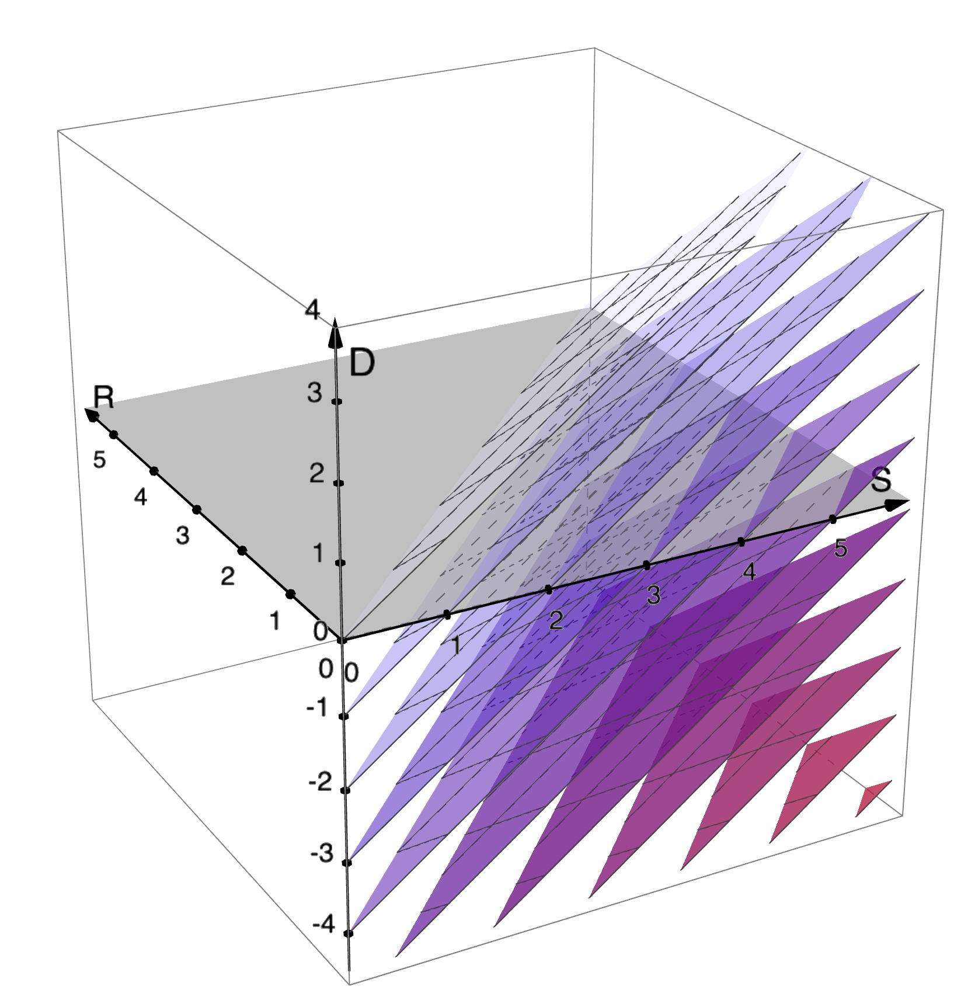

Code
using Plots, Distributions
gr(size=(200,200))
α,θ = 1, 1
plot(x->pdf(Pareto(α,θ),x),
xlim=(θ,5), label="pdf of Pareto($α,$θ)")\global\def\I#1{\operatorname{I}(#1)} \global\def\H#1{\operatorname{H}(#1)} \global\def\surp#1{\operatorname{surp}(#1)} \global\def\DIV#1#2#3#4{\operatorname{D_{#1}}(#3#2#4)} \global\def\KL#1#2{\DIV{KL}\|{#1}{#2}} \global\def\E{\operatorname*{\mathbb{E}}} \global\def\dee{\mathop{\mathrm{d}\!}} \global\def\var#1{\operatorname{\mathbb{V}}(#1)} \global\def\Var#1#2{\operatorname{\mathbb{V}}\!\!{}_{#1}(#2)} \global\def\indep{\bot\!\!\!\bot} \global\def\uu{\breve u}
\global\def\fade#1{{\color{gray}{#1}}} \global\def\uu{\breve u} \global\def\R{\operatorname{R}_{\pZu}(\uu)} \global\def\Rs#1{\operatorname{R}_{#1}(\uu)} \global\def\cPOST{\color{0A00A0}} \global\def\cPRIO{\color{008008}} \global\def\cPROP{\color{A00A00}} \global\def\pZu{{\cPOST p_{Z\mid\uu}}} \global\def\pzu{{\cPOST p(z\mid \uu)}} \global\def\qZu{{\cPROP q_{Z; \uu}}} \global\def\qzu{{\cPROP q(z; \uu)}} \global\def\Dq{D_{\pZu}^{\qZu \leftarrow p_Z}(\uu)} \global\def\surp#1{\operatorname{surp}(#1)} \global\def\priorZ{{\cPRIO p_{Z\mid \mathbf\uu_{< i}}}} \global\def\posteriorZ{{\cPOST p_{Z\mid \mathbf\uu_{\le i}}}} \global\def\proposalZ{{\cPROP q_{Z; \mathbf\uu_{\le i}}}} \global\def\priorz{{\cPRIO p(z\mid \mathbf\uu_{< i})}} \global\def\posteriorz{{\cPOST p(z\mid \mathbf\uu_{\le i})}} \global\def\proposalz{{\cPROP q(z; \mathbf\uu_{\le i})}} \global\def\Dqi{D_{ {\cPOST p} }^{{\cPROP q} \leftarrow {\cPRIO p} }(\uu)} \global\def\Ri{\Rs{{\cPOST p}}} % \global\def\posteriorU{{{p_\mathrm{LM}}(\mathbf U_{>i}\mid \mathbf\uu_{\le i})}} \global\def\proposalU{{{q_\mathrm{LM}}(\mathbf U_{>i}\mid \mathbf\uu_{\le i})}} \global\def\posterioru{{{p_\mathrm{LM}}(\mathbf u_{>i}\mid \mathbf\uu_{\le i})}} \global\def\proposalu{{{q_\mathrm{LM}}(\mathbf u_{>i}\mid \mathbf\uu_{\le i})}} \global\def\prioru{p_\mathrm{LM}(\mathbf u_{>i}\mid \mathbf\uu_{< i})} % \global\def\posteriorN{{{p_\mathrm{LM}}(\mathbf U_{i+1}\mid \mathbf\uu_{\le i})}} \global\def\posteriorn{{{p_\mathrm{LM}}(u_{i+1}\mid \mathbf\uu_{\le i})}} \global\def\dpdq{\frac{\dee p}{\dee q}}
Jacob Louis Hoover
Say we want to approximate some target distribution p using samples from some other distribution q.
If we use samples from q to approximate p, using importance sampling, the number of samples necessary and sufficient for for an accurate approximation is exponential in the relative entropy:
\#\text{samples}_{\mathrm{IS}(p\leftarrow q)} \approx e^{\KL p q}
For proof, see Chatterjee and Diaconis (2018), who show that taking e^{\KL p q} samples from q is a necessary and sufficient condition for the absolute value of the error to be close to zero with high probability.
Technically, this result only obtains when the log density of p wrt q is likely to be concentrated around its expected value.
That is, that \log \dpdq(Z) (where Z\sim p) is concentrated around \E_p{\log \dpdq(Z)} = \KL p q. Or equivalently, that \dpdq(Z')\log \dpdq(Z') (where Z'\sim q) is concentrated around \E_q{\dpdq(Z')\log \dpdq(Z')} = \KL p q. Roughly, this requirement is that the expected variance in importance weights is small.
More precisely, their result says that in order to bound the L^1-error of the estimate close to zero with high probability, a sample size of
where s is the typical order of fluctuations in \log \dpdq(Z) around its expected value, \KL p q.
So, for a sampling-based mechanism we can define the update cost as this exponentiatied relative entropy:
\mathrm{cost} \coloneqq e^{\KL p q}
also note, many empirical studies of human reading time as a function of surprisal log transform the response variable, which in fact implies an exponential relationship like this. this is acknowledged, if only rarely (for example, in Oh, Yue, and Schuler 2024)
The number of samples necessary for IS can also be related to other divergences (other than KL). See Agapiou et al. (2017) discuss the \chi^2-divergence, and also Sanz-Alonso (2018) (who also dicsuss Hellinger and TV).
Note it’s clear by Jensen’s that e^{\mathrm{KL}}\le \mathrm{D}_{\chi^2} + 1.
The result discussed in Agapiou et al. (2017) is:
There are many references for the relationships between KL and \chi^2 and other probability metrics/divergences (see Gibbs and Su 2002; Sanz-Alonso 2018).
\implies For us, the point is: we could alternatively say \mathrm{cost} \coloneqq \DIV{\chi^2}\| p q, and it would amount to something roughly similar as \mathrm{cost} \coloneqq e^{\KL p q}.
Let p_{Z,U} be a hypothetical joint distribution for Z a latent random variable, and U an observable random variable. We don’t assume we have any access to this distribution, but we’ll make use of the following derived distributions:
Let the proposal \qZu be some other distribution over Z, which may depend on the outcome \uu. Again assume \pZu\ll\qZu.
1 A sufficient but not quite necessary condition for IS weights to be well defined. Also a natural property in a Bayesian setting where the posterior is a reweighted version of the prior, so can’t put mass outside the support of the prior.
I’m writing a breve on the outcome variable just to denote that it is fixed.
The relative entropy of prior p_Z with respect to posterior \pZu can be written as:
\begin{aligned} \KL{\pZu}{p_Z} &= \E_{\pZu}{ \log\frac{\pzu}{p(z)} } = \E_{\pZu}{ \log\frac{p(z,\uu)}{p(z)p(\uu)} }\\ &= \E_{\pZu}{ \log\frac{p(\uu\mid z)}{p(\uu)} }\\ &= \log \frac1{p(\uu)} + \E_{\pZu}{\log p(\uu\mid z)} \\ &= \underbrace{-\log p(\uu)}_{\surp{\uu}} - \underbrace{\E_{\pZu}{-\log p(\uu\mid z)}}_{\coloneqq\ \R} \end{aligned}
So the relative entropy between prior and posterior consists of
We could define a more general \Rs{q} generally as
Definition 1 \Rs{q} \coloneqq \E_{z\sim q}{\log \frac1{p(\uu|z,\breve c)}} \tag{1}
where q is any distribution over the latent variable Z (such as a proposal, or variational approximation to the posterior), and \uu is a fixed observed outcome of U. Both the probability and the proposal may optionally depend on context \breve c.
Note \R=0 is a necessary and sufficient condition for the relative entropy between prior and posterior equalling surprisal:
\KL{\pZu}{p_Z}=-\log p(\uu) \quad\iff\quad \R=0
U being a deterministic function of Z is a sufficient condition for this to hold (this is the assumption made in the proofs of the equivalence of KL and surprisal, such as in Levy 2008).
If instead of sampling from the prior, we were sampling from some proposal distribution proposal \qZu, then the we can break down that divergence with respect to posterior \pZu, to get an additional term:
\begin{aligned} \KL{\pZu}{\qZu} &= \E_{\pZu}\log\frac{\pzu}{\qzu}\\ &= \E_{\pZu}\log\frac{\pzu}{p(z)}\frac{p(z)}{\qzu}\\ &= \KL{\pZu}{p_Z} + \E_{\pZu}\log\frac{p(z)}{\qzu}\\ &= {\surp{\uu}} - {\R} - \underbrace{\E_{\pZu}\log\frac{\qzu}{p(z)}}_{\coloneqq\ \Dq}\\ \end{aligned}
where the term \Dq, quantifies how much better \qZu is than p_Z for estimating \pZu. More precisely, as a difference in KLs, it represents the reduction in excess surprise resulting from using \qZu instead of p_Z, when the actual distribution is \pZu:
\Dq = \KL{\pZu}{p_Z} - \KL{\pZu}{\qZu}
Equivalently it can be viewed as measuring the reduction in cross-entropy: \Dq = \E_{\pZu}\log\frac{1}{p(z)}- \E_{\pZu}\log\frac{1}{\qzu}=\H{\pZu,p_Z}-\H{\pZu,\qZu}
Interpretation:
Bounds: -\infty\le\Dq\le\KL{\pZu}{p_Z}={\surp{\uu}} - {\R}.

This could be seen as a result of the general identity
\KL P Q = \KL P R - \E_P\log\frac{\dee Q}{\dee R}
for any measures P, Q, R, on the same space with P\ll R and P\ll Q.
This could alternatively be written as
\begin{aligned} \KL{\pZu}{\qZu} &= \surp{\uu} - \left( \E_{\pZu}{\log\frac1{p(\uu\mid z)}} + \E_{\pZu}{\log\frac{\qzu}{p(z)}} \right)\\ &= \surp{\uu} + \underbrace{\E_{\pZu}{\log\frac{p(z,\uu)}{\qzu}}}_{-\R-\Dq} \end{aligned}
The expectation here looks a lot like \operatorname{ELBO}_\qZu(\uu)\coloneqq\E_{\qZu}\left[\log\frac{p(z, \uu)}{\qzu}\right] in variational inference (aka negative variational free energy), but they differ in what the expectation is taken with respect to.
For comparison, using the same notation, the usual derivation in VAE looks like this. See, e.g., (Kingma 2017; though this math goes back before VAEs at least to Dayan et al. 1995, eq 2.5):
\begin{aligned} \log p(\uu) &= \KL{\qZu}{\pZu} + \overbrace{\E_{\qZu}{\log\frac{p(z, \uu)}{\qzu}}}^{\operatorname{ELBO}_\qZu(\uu)}\\ \end{aligned}
So, we get a very similar equation to the above for a KL in the opposite direction:
\begin{aligned} \KL{\qZu}{\pZu} &= -\surp{\uu} - \E_{\qZu}{\log\frac{p(z, \uu)}{\qzu}} \end{aligned}
or
\begin{aligned} \KL{\qZu}{\pZu} &= - \surp{\uu} - \E_{\qZu}{\log\frac{p(\uu\mid z)p(z)}{\qzu}}\\ &= -\surp{\uu} - \E_{\qZu}{\log p(\uu\mid z)} + \KL{\qZu}{p_Z}\\ &= - \surp{\uu} + \underbrace{\E_{\qZu}{-\log p(\uu\mid z)}}_{\text{neg. reconstr. error }\operatorname{R}_{\qZu}(\uu)} + \underbrace{\KL{\qZu}{p_Z}}_{\text{regularizer}}\\ \end{aligned}
In this setup, \qZu is chosen in order to maximize the ELBO. The ELBO consists of two components, the reconstruction error (which is a negative-log-likelihood term, to be maximized) minus the KL between \qZu and the prior (which can be seen as a regularization term, to be minimized).
These equations look very similar, but it is very different from the case we are interested in, where expectations are taken with respect to the true unknown posterior.
While this direction of KL (with expectation over \qZu) may be the “backward” direction from the point of view of the connection with sampling, it might be important to understand whether/how it relates to processing effort in some way, since when \qZu=p_Z, this is precisely the divergence used as “Bayesian Surprise” (Baldi 2002; Baldi and Itti 2010) (see lit review). Might be that this was chosen purely for computational convenience, but even so, worth understanding what it implies.
Depending on which direction of KL we choose to use we have two ways of expressing the surprisal:
\begin{aligned} \surp{\uu} &= \overbrace{\E_{\qZu}{\log\frac{\qzu}{p(\uu\mid z)p(z)}}}^{-\operatorname{ELBO}_\qZu(\uu)} - \KL{\qZu}{\pZu}\\ \surp{\uu} &= \underbrace{\E_{\pZu}{\log \frac{\qzu}{p(\uu\mid z)p(z)}}}_{\R+\Dq} + \KL{\pZu}{\qZu} \end{aligned}
or, put another way, with R, D, and the ELBO we can express the sum of the KL and reverse-KL \DIV{J},pq\coloneqq \KL pq + \KL qp = \E_q{(\dpdq-1)\log\dpdq} = \DIV{\lambda t.(t-1)\log t}\|pq (this symmetric f-divergence is actually the one originally proposed by K&L, and earlier defined by Jeffreys):
0\le {\DIV{J},{\pZu}{\qZu}} = \overbrace{\E_{\qZu}{\log\frac{\qzu}{p(\uu\mid z)p(z)}}}^{-\operatorname{ELBO}_\qZu(\uu)} - \overbrace{\E_{\pZu}{\log \frac{\qzu}{p(\uu\mid z)p(z)}}}^{\R+\Dq}
This is a bit pointless in the abstract, since,\Dq can be positive or negative, hence no bounds are implied. Yet, when we just consider the case where \qZu=p_Z, then D = 0, and we have
0\le \DIV{J},{\pZu}{p_Z} = \overbrace{\E_{p_Z}{\log\frac{1}{p(\uu\mid z)}}}^{-\operatorname{ELBO}_{p_Z}(\uu)=\operatorname{R}_{p_Z}(\uu)} - \overbrace{\E_{\pZu}{\log \frac{1}{p(\uu\mid z)}}}^{\R}
where all the terms are nonnegative, so then we can say the magnitude of the ELBO (or, free energy, I guess) is in fact a upper bound on the magnitude of surprisal, which is an upper bound on R.
0\le\R\le\surp{\uu}\le-\operatorname{ELBO}_{p_Z}(\uu)=\operatorname{R}_{p_Z}(\uu)
Is it useful to say that surprisal is bounded between R below and prior-reconstruction error/free energy above?
Above we’re assuming all the probabilities depend on a (notationally suppressed) ‘context’ random var. Now let’s write out the same derivation but with the observation being explicitly the ith item in a sequence \uu_1, \uu_2, \ldots. So the ‘context’ is \mathbf\uu_{<i}, and \mathbf\uu_{\le i} the context with the current observation.
Decomposing the KL into two pieces (Leaving R+D as a single term), we can write the KL as:2
2 where the first step is since
\begin{aligned} &\log \frac{\posteriorZ(z)}{\priorZ(z)}\\ &= \log \frac{p({z\mid \mathbf\uu_{< i},\uu_i})}{p({z\mid \mathbf\uu_{< i}})}\\ &= \log \frac{p({z,\uu_i\mid \mathbf\uu_{< i}})}{p({z\mid \mathbf\uu_{< i}})p({\uu_i\mid \mathbf\uu_{< i}})}\\ &= \log \frac{p({\uu_i\mid z, \mathbf\uu_{< i}})}{p({\uu_i\mid \mathbf\uu_{< i}})}\\ &= \surp{\uu_i}+\log{p({\uu_i\mid z, \mathbf\uu_{< i}})} \end{aligned}
and the second is since
\begin{aligned}
&= \log\frac1{p({\uu_i\mid z, \mathbf\uu_{< i}})}\frac{\proposalZ}{\priorZ}\\
&= \log\frac{q({z; \mathbf\uu_{\le i}})}{p({\uu_i\mid z, \mathbf\uu_{< i}})p({z\mid \mathbf\uu_{< i}})}
\end{aligned}
\begin{aligned} \KL{\posteriorZ}{\proposalZ} &= \E_{\posteriorZ}{\log\frac{\posteriorZ}{\proposalZ}} = \E_{\posteriorZ}{\log\frac{\posteriorZ}{\priorZ}\frac{\priorZ}{\proposalZ}}\\ &= \surp{\uu_i}-\E_{\posteriorZ}{\log\frac1{p({\uu_i\mid z, \mathbf\uu_{< i}})}\frac{\priorZ}{\proposalZ}}\\ &= \surp{\uu_i}-\E_{\posteriorZ}{\log\frac{q({z; \mathbf\uu_{\le i}})}{p({z,\uu_i\mid \mathbf\uu_{< i}})}} \end{aligned}
Or, breaking the KL into three pieces
\begin{aligned} \KL{\posteriorZ}{\proposalZ} &= \E_{\posteriorZ}{\log\frac{\posteriorZ}{\proposalZ}} = \E_{\posteriorZ}{\log\frac{\posteriorZ}{\priorZ}\frac{\priorZ}{\proposalZ}}\\ &= \KL{\posteriorZ}{\priorZ} - \E_{\posteriorZ}{\log\frac{\proposalZ}{\priorZ}}\\ &= \underbrace{\log \frac1{p(\uu_i\mid\mathbf\uu_{< i})}}_{\surp{\uu}} - \underbrace{\E_{\posteriorZ}{\log\frac1{p(\uu_i\mid {\cPOST z},\mathbf\uu_{< i})}}}_{\Ri} - \underbrace{\E_{\posteriorZ}{\log\frac{\proposalZ}{\priorZ}}}_{\Dqi} \end{aligned}
We can also write out the surprisal term as the joint marginalized over the prior meanings:
\begin{aligned} \KL{\posteriorZ}{\proposalZ} &= \underbrace{ \log \frac1{\E_{\priorZ} {p(\uu_i\mid {\cPRIO z},\mathbf\uu_{< i})}} }_{\surp{\uu}} - \underbrace{ \E_{\posteriorZ}{\log\frac1{p(\uu_i\mid {\cPOST z},\mathbf\uu_{< i})}} }_{\Ri} - \underbrace{ \E_{\posteriorZ}{\log\frac{\proposalZ}{\priorZ}} }_{\Dqi} \end{aligned}
Let’s look at the first two terms above (the q=prior situation), and let’s break down the posterior into prior and likelihood (Bayes), recalling that the negative log marginal likelihood is the surprisal:
\posteriorz =
\frac{\priorz p(\uu_i\mid z,\mathbf\uu_{< i})}
{p(\uu_i\mid\mathbf\uu_{<i})}
= e^{\surp{\uu_i}}
\priorz p(\uu_i\mid z,\mathbf\uu_{< i})
So,
\begin{align} \KL{\posteriorZ}{\priorZ} &= \overbrace{ \log \frac1{p(\uu_i\mid \mathbf\uu_{<i})} }^{\surp{\uu_i}} - \overbrace{ \E_{\posteriorZ}{\log\frac1{p(\uu_i\mid {\cPOST z},\mathbf\uu_{< i})}} }^{\Ri} \\ &= \log \frac1{\E_{\priorZ} {p(\uu_i\mid {\cPRIO z},\mathbf\uu_{< i})}}\\ &\quad - e^{\surp{\uu_i}}\E_{\priorZ}p(\uu_i\mid {\cPRIO z},\mathbf\uu_{< i})\log\frac1{p(\uu_i\mid {\cPOST z},\mathbf\uu_{< i})} \end{align}
This is complicated looking, but one thing it means is if the prior is a one-hot/Dirac delta entirely concentrated on some value {\cPRIO z'}, then the KL is zero.3
3 Note in this degenerate case surprisal = negative log likelihood of \cPRIO z'.
\KL{\posteriorZ}{{\cPRIO \delta_{z'}}} = \log \frac1{ p(\uu_i\mid z',\mathbf\uu_{< i})} - \log\frac1{p(\uu_i\mid z',\mathbf\uu_{< i})} = 0
\KL{\posteriorZ}{\proposalZ} is the magnitude of the belief update from the proposal \proposalZ to the posterior \posteriorZ. Importance sampling is ideally exponential in this quantity (if such an algorithm exists). This quantity can be broken down into three pieces as KL = S – R – D.
By Jensen’s inequality (note -\log(\cdot) is concave up):
\surp{\uu} %= -\log p(\uu_i\mid\mathbf\uu_{< i}) = -\log \E_{\priorZ}{p(\uu_i\mid {\cPRIO z},\mathbf\uu_{< i})} \le \E_{\priorZ}{ -\log p(\uu_i\mid {\cPRIO z},\mathbf\uu_{< i})}\\ %= \E_{\priorZ}{ -\log p(\uu_i\mid {\cPRIO z})}\quad\text{if }U_i\indep U_{\le i} \mid {\cPRIO Z}\\
If we interpret the latent variable \cPRIO z \sim \priorZ as a lossy/noised version of the context, and make an independence assumption, U_i\indep U_{\le i} \mid {\cPRIO Z}, then surprisal is upperbounded by lossy-context surprisal \E_{\priorZ}{ -\log p(\uu_i\mid {\cPRIO z})}, as defined in Futrell, Gibson, and Levy (2020).
For the S term: we might want to add an assumption that U_i\indep U_{\le i} \mid Z_{i-1} (motivated by a model wherein \cPOST z \sim \posteriorZ contains all the useful information from \uu_{\le i})
This assumption would yield that p(\uu_i\mid\mathbf\uu_{< i}) = \E_{\priorZ} p(\uu_i\mid {\cPRIO z}), so:
\surp{\uu_i} = \log \frac1{\E_{\priorZ}{p(\uu_i\mid {\cPRIO z})}}
For the R term: If we assume that U_i\indep U_{\le i} \mid Z_i (this might be somewhat less obviously reasonable to assume), then we get something similar for R:
R_{\posteriorZ}(\uu) = \E_{\posteriorZ}{\log\frac1{p(\uu_i\mid {\cPOST z})}}
We have the decomposition
\KL\posteriorZ\proposalZ = \surp{\uu} - \left(\Ri + \Dqi\right)
Surprisal theory models difficulty as \approx\mathrm{S}. Generalizing, we can describe surprisal theory as difficulty \approx f(\mathrm{S}), for monotonic increasing f (not necessarily linear).
We would like to propose KL-theory which models difficulty as \approx f(\mathrm{D_{KL}}) instead (motivated by algorithmic complexity of sampling being \approx e^{\mathrm{D_{KL}}}).
Q: When do these make different predictions?
A: When \surp{\uu} is high, but [\Ri+\Dqi] is similarly high. Then surprisal theory predicts \uu is difficult, and KL theory predicts it is not.
The possible cases leading to high surprisal but low KL:
Assume D is negligible. We get low KL when \uu remains unpredictable on average even when given the latent z_i (which encodes information about y_i). Intuitively: when the latent variable forgets/misrepresents the identity of y_i. For example, a perceived production error/typo?
Assume R is negligible. We get low KL when \proposalZ is much better than \priorZ. That is, when your smart proposal gives a large reduction in excess surprise.
When both of the above happen simultaneously.
The number of samples from p_Z for an IS estimate of \pZu is e^{\KL{\pZu}{p_Z}}.
The number of samples from \qZu for an IS estimate of \pZu is e^{\KL{\pZu}{\qZu}}.
If the observable U is assumed to be a deterministic function of the latent Z (as in Levy (2008), where latent state consists partially of the observable string), then \R=0, and thus \KL{\pZu}{p_Z}=-\log p(\uu). Thus, IS (which, with a binary likelihood function becomes simply rejection sampling, see Chen 2005), will require e^{-\log p(\uu)}=\frac1{p(\uu)} samples.
This gives us a clear prediction for runtime being an exponential function of surprisal.
However, there are two issues with this:
What properties of \qZu or \R would have to hold to have runtime be a particular parametric relationship with surprisal (such as a linear one)?
If we don’t assume anything particular about \qZu, then, the sampling-based update cost is
\begin{aligned} \operatorname{cost}(\uu) &= e^{\KL\pZu\qZu}\\ &= e^{\surp{\uu} - \R - \Dq} \end{aligned}
If \operatorname{cost}(\uu) = f(\surp{\uu}) for some linking function f, then
\begin{aligned} f(\surp{\uu}) &= e^{\surp{\uu} - \R - \Dq}\\ \log f(\surp{\uu}) &= \surp{\uu} - \R - \Dq\\ \end{aligned}
so
\begin{aligned} \R + \Dq &= \surp{\uu} - \log f(\surp{\uu}) \\ % &= - \log\left(p(\uu) f( \surp{\uu})\right) \\ e^{\R + \Dq} &= \frac1{p(\uu) f(\surp{\uu})} \end{aligned}
If we assume we’re sampling from the prior (so \qZu=p_Z), then \Dq=0, so
\R = \surp{\uu} - \log f(\surp{\uu})
Parametric relationships.
Thus, if we measure cost as reading time (RT), and fit RT as a function of surprisal, \operatorname{cost}(\uu) = \operatorname{RT}(\uu) = f_\mathrm{GAM}(\surp{\uu}), we can inspect the implies about the term G\coloneqq \R + \Dq, by simply subtracting the log fit RT value from the surprisal.
G(s) = s - \log f_\mathrm{GAM}(s)
For deterministic ranked search, if items are sorted in order of decreasing probability, runtime is simply the number of items with higher probability (assuming no two items have the same probability, in which case the sorting is not well defined). To say anything about the expected runtime requires making some assumption about how item probabilities are distributed. I’ll assume probabilities are distributed proportional to a Pareto distribution, and derive that the runtime is exponential in surprisal. A similar derivation results from assuming the item odds are Pareto-distributed (which is the assumption made in Anderson and Lebiere 1998). Here are both those derivations.
Runtime = number of items with higher probability.
Assume: weights \mathsf{w}\sim Pareto distribution
By weights here I just mean unnormalized probabilities. So the probability of an item with weight w is \frac{w}{Z}, for global normalizing constant Z.
If item weights have density \operatorname{pdf}(\mathsf{w})= \fade{a}\mathsf{w}^{-(\alpha + 1)} then item surprisal, \mathsf{s} (= -\log\frac{\mathsf{w}}{\fade{Z}}), has density:4
4 The density of X \sim \operatorname{Pareto}(\alpha,\theta) is f(x) = \alpha\theta^\alpha x^{-(\alpha+1)} (for x \ge \theta), with parameters \alpha>0,\theta>0. Abbreviate with constant a = \alpha\theta^\alpha.
\begin{equation} \operatorname{pdf}(\mathsf{s}) = \fade{\frac{a}{Z^\alpha}}e^{\fade{\alpha} \;\!\mathsf{s}} \end{equation}
Surprisal is a (monotonic smooth) deterministic function of item weight, so, starting with the pdf for weights f(\mathsf{w}), we can derive the expression for the pdf of surprisal h(\mathsf{s}) as follows.
With \mathsf{w}=\fade{Z}e^{-\mathsf{s}}, we have
So by the transformed pdf is
\begin{aligned} h(\mathsf{s}) &= f(\mathsf{w}(\mathsf{s})) \cdot \left|\frac{\dee{}}{\dee{\mathsf{s}}}\mathsf{w}(\mathsf{s})\right|\\ &= \frac{\fade{a}}{\fade{Z}^{\fade{\alpha}+1}}e^{(\fade{\alpha}+1)\mathsf{s}} \cdot \fade{Z}e^{-\mathsf{s}} = \frac{\fade{a}}{\fade{Z}^{\fade{\alpha}}}e^{\fade{\alpha}\mathsf{s}} \end{aligned}
For target item i, the proportion of items with surprisal lower than \surp{i} is
\begin{equation} \Pr(\mathsf{s} < \surp{i}) = \int_0^{\surp{i}} \operatorname{pdf}(\mathsf{s}) \dee{\mathsf{s}} = \fade{\frac{a}{\alpha Z^\alpha}}\fade{(}e^{\alpha \surp{i}} -1\fade{)} \end{equation}
so, collecting contants, the total search runtime to find i is \begin{equation} \operatorname{Time}(i) = \fade{K}\fade{(}e^{\alpha\;\!\surp{i}} - 1\fade{)} \end{equation}
\implies search runtime increases exponentially with surprisal.
Very similar to above, Anderson and Lebiere (1998) start by assuming odds (rather than unnormalized probabilities) are Pareto distributed, and give a similar derivation,
In ACT-R, assume: need odds \sim Pareto.
\implies seach runtime increases exponentially with (negative) log-odds.
which can be restated in terms of suprisal as below.
If odds have density \operatorname{pdf}(\mathsf{o})= \fade{a}\mathsf{o}^{-(\alpha + 1)} then log odds, \mathsf{r} (= \log \mathsf{o}), have density
\begin{equation} \operatorname{pdf}(\mathsf{r}) = \fade{a}e^{-\fade{\alpha}\;\!\mathsf{r}} \end{equation}
by transformation, similar to above.
Then as above, for target item i one can derive relationship between log-odds and search runtime as the proportion of items with higher log odds:
\begin{equation} \Pr(\mathsf{r} > \mathrm{logodds}(i)) = \int_{\mathrm{logodds}(i)}^\infty \operatorname{pdf}(\mathsf{r}) \dee{\mathsf{r}} = \fade{\frac a\alpha}e^{-\fade{\alpha}\mathrm{logodds}(i)} \end{equation}
letting constant \fade{K}=\fade{a/\alpha}, this is the usual form of what is called the ‘latency formula’ in ACT-R, usually stated in terms of log odds, but which we can translate into a function of surprisal:
\begin{equation} % \tag{\fade{\text{ACT-R latency}}} \qquad \operatorname{Time}(i) = \fade{K} e^{-\fade{\alpha}\;\!\mathrm{logodds}(i)} = \fade{K} (e^{\surp{i}}-1)^\alpha \end{equation}
by the identity \mathrm{logodds}(\cdot) = -\log(e^{\surp{\cdot}}-1).
\implies search runtime increases exponentially with surprisal.
Worth noting: In the ACT-R literature, it is often assumed that the parameter \alpha = 1, so this simplifies to \operatorname{Time}(i) \propto e^{\surp{i}} - 1.